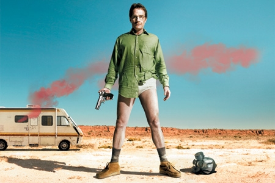
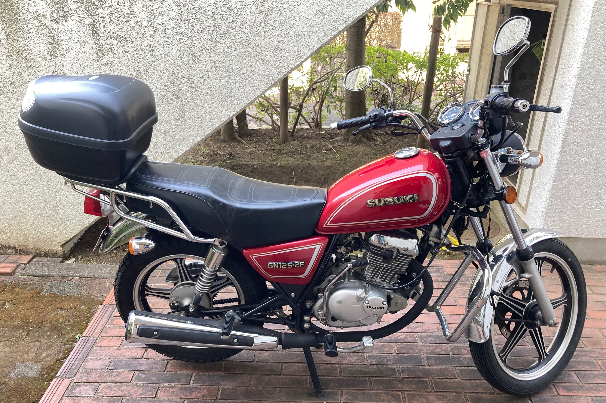

---経歴---
- 2002年:3月22日、東京にて生まれる。
- 2014年:中学受験するも失敗。地元の中学校に進学する。
- 2019年:自転車のブレーキが効かず車と衝突事故。けがは無し。
- 2020年:青山学院大学に入学。そして今に至る。
---趣味---
Netflix
アニメと海外ドラマをよく見る。その中でも特におすすめなのが「ブレイキングバッド」という作品。高校の理科の教師であるウォルターとその生徒であるジェシーが力を合わせて麻薬（クリスタルメス）を作り、お金を稼ごうとする物語である。
バイク(before)
二輪の中型免許はつい先月に取ったのだが、このバイクはそれより何ヵ月も前に購入したものである。早く乗りたい気持ちが強かったからである。さらに、免許を取る前にスプレーで色をも塗ってしまった。(画像をホバーして)